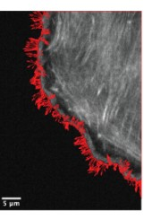
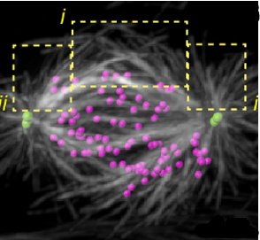
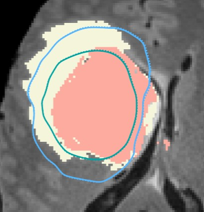
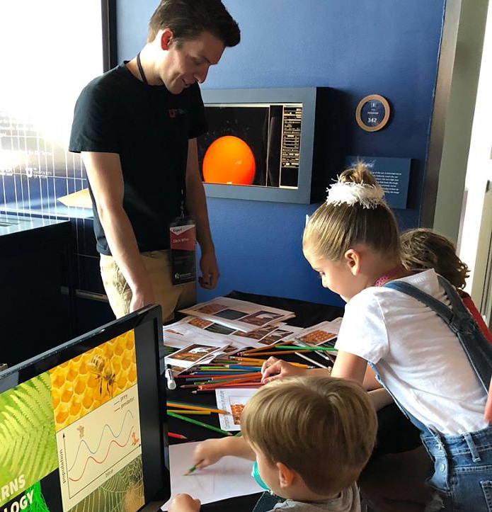
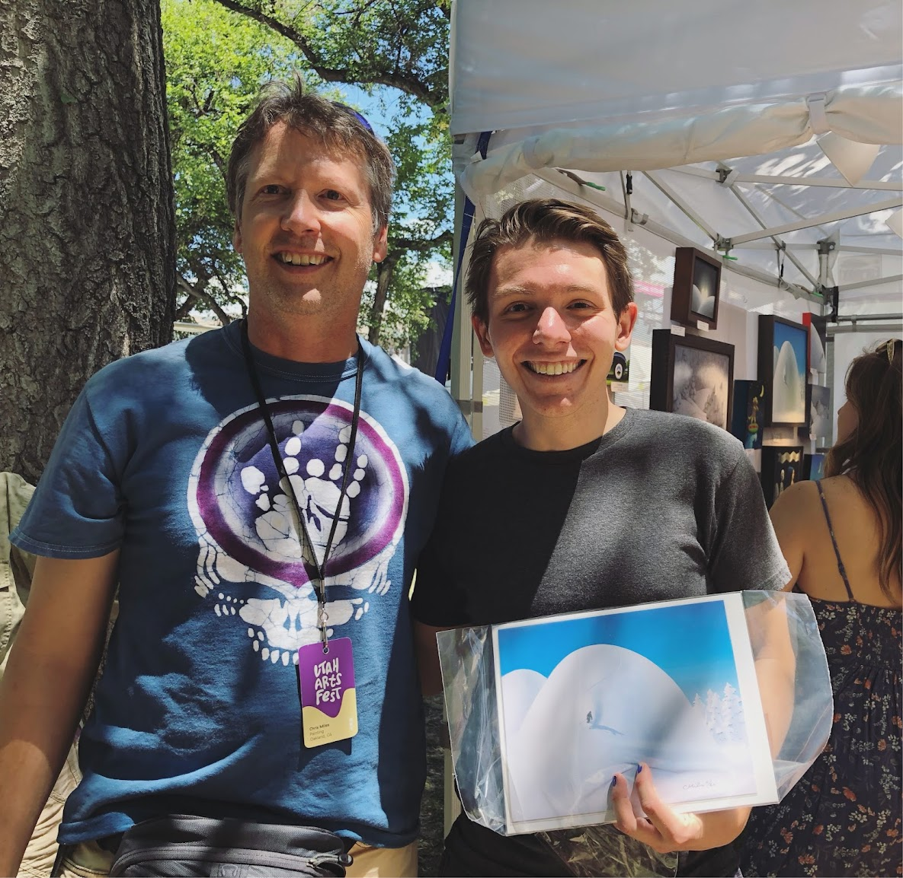

Research Themes
We study how cellular function arises from the spatiotemporal self-organization of stochastic molecular components. We build mechanistic models grounded in biophysics and pair them with machine learning, usually in close collaboration with experimental scientists. The goal is to turn rich measurements into testable theories and useful computational tools.
Spatial Genomics
Microscopy and spatial transcriptomics (like smFISH) can now pinpoint individual RNA molecules inside a cell. But where an RNA lives, its subcellular localization, proximity to the nucleus, splicing state, is often as informative as how many there are. We build stochastic models that connect these static spatial snapshots to the kinetic processes shaping RNA and chromatin organization.
Cytoskeleton & Cell Division
Cells rely on teams of motor proteins and filaments for a zoo of tasks, from hauling cargo across enormous intracellular distances to orchestrating chromosome capture during division. These molecular machines behave randomly as individuals yet produce remarkably reliable outcomes as collectives. We build stochastic mechanical models to understand how reliability emerges from randomness.
Scientific Machine Learning
While we rarely build new tools for their own sake, biological data is heterogeneous, high-dimensional, and structured in ways that off-the-shelf methods struggle with. To extract interpretable understanding from this data, we develop approaches combining mechanistic stochastic models with modern machine learning, spanning simulation-based and Bayesian inference, physics-informed neural networks, and variational methods.
Selected Publications

Reconstructing Actin Dynamics of the Leading Edge from Observational Data

The kinetochore corona orchestrates chromosome congression through transient microtubule interactions

BiLO: Bilevel Local Operator Learning for PDE Inverse Problems
The Team
Jacy Zanussi
stochastic gene expression + simulation-based inference
fav veggie: all peppers 🌶️ (approved as honorary vegetable)
Austin Marcus
nuclear condensates, cilia (co-advised w/ Jun Allard)
fav veggie: onion 🧅
Rebecca (Rujie) Gu
physics-informed neural networks + point processes
fav veggie: spinach 🍃
Matt Lastner
meiosis biophysics, polymer models (co-advised w/ Ofer Rog)
fav veggie: sweet potato 🍠
You?
Prospective students can apply to the Utah math graduate program and/or reach out to Chris. Be prepared to defend your favorite vegetable.
Apply to Utah MathAbout Chris
Timeline
Editorial
Miscellany

Chris + little mathematicians
As a first-gen college student, I care about outreach and inclusion in science, especially for historically marginalized populations. Some programs I've been part of: Science Communication Fellow (Utah), INSPIRE (incarcerated youth), Proud to be First (NYU), Cal-Bridge, and DECADE (UCI).
Finn (left) + Piper (right) + foster (middle)
In rare instances of spare time, you might find me: birding, rock climbing, watching arthouse film, or tending to the ever-growing needs of my cats (see photo). Some recent favorites include the American Kestrel, Wong Kar-wai's In the Mood for Love, and the humble beet .

Chris Miles (artist) + Chris Miles (mathematician)
For the sake of clarity: I am not Chris Miles, the rapper. Nor am I Christopher J. Miles, the other scientist. I am also not Chris Miles, the artist. However, I have crossed paths with him and appreciate his work.